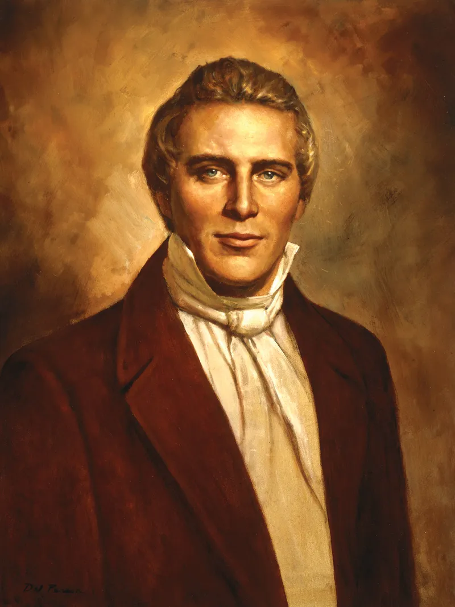

Joseph Smith: The Prophet of the Restoration
An overview of the life and role of Joseph Smith in the Restoration of the gospel of Jesus Christ, including key events, teachings, and historical context.
Why Joseph Smith Matters
Joseph Smith was called as the Prophet of the Restoration and played a central role in restoring the gospel of Jesus Christ to the earth. Through him came the First Vision, the Book of Mormon, restored priesthood authority, and the organization of The Church of Jesus Christ of Latter-day Saints.

Key Events in His Life
- Early Life
- Born in 1805 in Sharon, Vermont
- Raised in a time of strong religious excitement
- The First Vision
- Prayed to know which church was true
- Saw God the Father and Jesus Christ
- Translation of the Book of Mormon
- Visited by the angel Moroni
- Translated the plates by the gift and power of God
- Organization of the Church
- The Church was organized in 1830
- Priesthood authority and gospel truths were restored
Joseph Smith Video
A brief overview of Joseph Smith and the events of the Restoration.
Interactive Tableau Visualization
An interactive visualization related to leadership and organization within the Church.